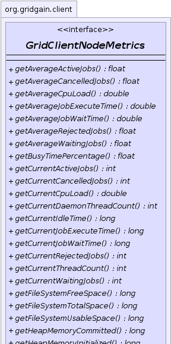
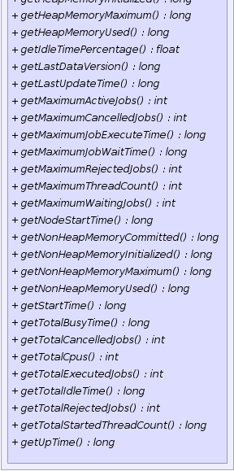

|
|

|

|
|

|

|
|
GridGain™ 4.0.1
Java Client |
|||||||||
| PREV CLASS NEXT CLASS | FRAMES NO FRAMES | |||||||||
| SUMMARY: NESTED | FIELD | CONSTR | METHOD | DETAIL: FIELD | CONSTR | METHOD | |||||||||
public interface GridClientNodeMetrics
Node metrics.
| Wiki | |
| Forum |
|  |
|  |
| Method Summary | |
|---|---|
float |
getAverageActiveJobs()
Gets average active jobs. |
float |
getAverageCancelledJobs()
Gets average cancelled jobs. |
double |
getAverageCpuLoad()
Gets average of CPU load values over all metrics kept in the history. |
double |
getAverageJobExecuteTime()
Gets average job execution time. |
double |
getAverageJobWaitTime()
Gets average job wait time. |
float |
getAverageRejectedJobs()
|
float |
getAverageWaitingJobs()
Gets average waiting jobs. |
float |
getBusyTimePercentage()
Gets percentage of time this node is busy executing jobs vs. idling. |
int |
getCurrentActiveJobs()
Gets current active jobs. |
int |
getCurrentCancelledJobs()
Gets current cancelled jobs. |
double |
getCurrentCpuLoad()
Returns the system load average for the last minute. |
int |
getCurrentDaemonThreadCount()
Returns the current number of live daemon threads. |
long |
getCurrentIdleTime()
|
long |
getCurrentJobExecuteTime()
Gets current job execute time. |
long |
getCurrentJobWaitTime()
Gets current job wait time. |
int |
getCurrentRejectedJobs()
|
int |
getCurrentThreadCount()
Returns the current number of live threads including both daemon and non-daemon threads. |
int |
getCurrentWaitingJobs()
Gets current waiting jobs. |
long |
getFileSystemFreeSpace()
Returns the number of unallocated bytes in the partition. |
long |
getFileSystemTotalSpace()
Returns the size of the partition. |
long |
getFileSystemUsableSpace()
Returns the number of bytes available to this virtual machine on the partition. |
long |
getHeapMemoryCommitted()
Returns the amount of heap memory in bytes that is committed for the Java virtual machine to use. |
long |
getHeapMemoryInitialized()
Returns the amount of heap memory in bytes that the Java virtual machine initially requests from the operating system for memory management. |
long |
getHeapMemoryMaximum()
Returns the maximum amount of heap memory in bytes that can be used for memory management. |
long |
getHeapMemoryUsed()
Returns the current heap size that is used for object allocation. |
float |
getIdleTimePercentage()
Gets percentage of time this node is idling vs. executing jobs. |
long |
getLastDataVersion()
Data grid assigns incremental versions to all cache operations. |
long |
getLastUpdateTime()
Gets last update time. |
int |
getMaximumActiveJobs()
Gets max active jobs. |
int |
getMaximumCancelledJobs()
Gets maximum cancelled jobs. |
long |
getMaximumJobExecuteTime()
Gets maximum job execution time. |
long |
getMaximumJobWaitTime()
Gets max job wait time. |
int |
getMaximumRejectedJobs()
|
int |
getMaximumThreadCount()
Returns the maximum live thread count since the Java virtual machine started or peak was reset. |
int |
getMaximumWaitingJobs()
Gets maximum waiting jobs. |
long |
getNodeStartTime()
Returns the start time of grid node in milliseconds. |
long |
getNonHeapMemoryCommitted()
Returns the amount of non-heap memory in bytes that is committed for the Java virtual machine to use. |
long |
getNonHeapMemoryInitialized()
Returns the amount of non-heap memory in bytes that the Java virtual machine initially requests from the operating system for memory management. |
long |
getNonHeapMemoryMaximum()
Returns the maximum amount of non-heap memory in bytes that can be used for memory management. |
long |
getNonHeapMemoryUsed()
Returns the current non-heap memory size that is used by Java VM. |
long |
getStartTime()
Returns the start time of the Java virtual machine in milliseconds. |
long |
getTotalBusyTime()
|
int |
getTotalCancelledJobs()
Gets total cancelled jobs. |
int |
getTotalCpus()
Returns the number of CPUs available to the Java Virtual Machine. |
int |
getTotalExecutedJobs()
Gets total active jobs. |
long |
getTotalIdleTime()
|
int |
getTotalRejectedJobs()
|
long |
getTotalStartedThreadCount()
Returns the total number of threads created and also started since the Java virtual machine started. |
long |
getUpTime()
Returns the uptime of the Java virtual machine in milliseconds. |
| Method Detail |
|---|
long getLastUpdateTime()
int getMaximumActiveJobs()
int getCurrentActiveJobs()
float getAverageActiveJobs()
int getMaximumWaitingJobs()
int getCurrentWaitingJobs()
float getAverageWaitingJobs()
int getMaximumRejectedJobs()
int getCurrentRejectedJobs()
float getAverageRejectedJobs()
int getTotalRejectedJobs()
int getMaximumCancelledJobs()
int getCurrentCancelledJobs()
float getAverageCancelledJobs()
int getTotalExecutedJobs()
int getTotalCancelledJobs()
long getMaximumJobWaitTime()
long getCurrentJobWaitTime()
double getAverageJobWaitTime()
long getMaximumJobExecuteTime()
long getCurrentJobExecuteTime()
double getAverageJobExecuteTime()
long getTotalBusyTime()
long getTotalIdleTime()
long getCurrentIdleTime()
float getBusyTimePercentage()
1 and greater than or equal to 0)float getIdleTimePercentage()
1 and greater than or equal to 0)int getTotalCpus()
Runtime.availableProcessors()
method.
Note that this value may change during successive invocations of the virtual machine.
double getCurrentCpuLoad()
If the load average is not available, a negative value is returned.
This method is designed to provide a hint about the system load and may be queried frequently. The load average may be unavailable on some platform where it is expensive to implement this method.
[0, 1] range.
Negative value if not available.double getAverageCpuLoad()
[0, 1] range over all metrics kept
in the history.long getHeapMemoryInitialized()
-1 if the initial memory size is undefined.
-1 if undefined.long getHeapMemoryUsed()
used heap memory values of all heap memory pools.
The amount of used memory in the returned is the amount of memory occupied by both live objects and garbage objects that have not been collected, if any.
Note: this is not an aggregated metric and it's calculated from the time of the node's startup.
long getHeapMemoryCommitted()
committed heap memory values of all heap memory pools.
Note: this is not an aggregated metric and it's calculated from the time of the node's startup.
long getHeapMemoryMaximum()
-1
if the maximum memory size is undefined.
This amount of memory is not guaranteed to be available for memory management if it is greater than the amount of committed memory. The Java virtual machine may fail to allocate memory even if the amount of used memory does not exceed this maximum size.
This value represents a setting of the heap memory for Java VM and is not a sum of all initial heap values for all memory pools.
Note: this is not an aggregated metric and it's calculated from the time of the node's startup.
-1 if undefined.long getNonHeapMemoryInitialized()
-1 if the initial memory size is undefined.
This value represents a setting of non-heap memory for Java VM and is not a sum of all initial heap values for all memory pools.
Note: this is not an aggregated metric and it's calculated from the time of the node's startup.
-1 if undefined.long getNonHeapMemoryUsed()
used non-heap memory values of all non-heap memory pools.
Note: this is not an aggregated metric and it's calculated from the time of the node's startup.
Note: this is not an aggregated metric and it's calculated from the time of the node's startup.
long getNonHeapMemoryCommitted()
committed non-heap memory values of all non-heap memory pools.
Note: this is not an aggregated metric and it's calculated from the time of the node's startup.
long getNonHeapMemoryMaximum()
-1
if the maximum memory size is undefined.
This amount of memory is not guaranteed to be available for memory management if it is greater than the amount of committed memory. The Java virtual machine may fail to allocate memory even if the amount of used memory does not exceed this maximum size.
This value represents a setting of the non-heap memory for Java VM and is not a sum of all initial non-heap values for all memory pools.
Note: this is not an aggregated metric and it's calculated from the time of the node's startup.
-1 if undefined.long getUpTime()
long getStartTime()
long getNodeStartTime()
int getCurrentThreadCount()
int getMaximumThreadCount()
Note: this is not an aggregated metric and it's calculated from the time of the node's startup.
long getTotalStartedThreadCount()
Note: this is not an aggregated metric and it's calculated from the time of the node's startup.
int getCurrentDaemonThreadCount()
long getFileSystemFreeSpace()
long getFileSystemTotalSpace()
long getFileSystemUsableSpace()
long getLastDataVersion()
|
GridGain™ 4.0.1
Java Client |
|||||||||
| PREV CLASS NEXT CLASS | FRAMES NO FRAMES | |||||||||
| SUMMARY: NESTED | FIELD | CONSTR | METHOD | DETAIL: FIELD | CONSTR | METHOD | |||||||||
|
GridGain - Real Time Big Data
|
|
|